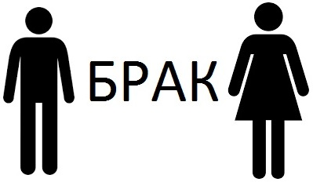
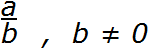
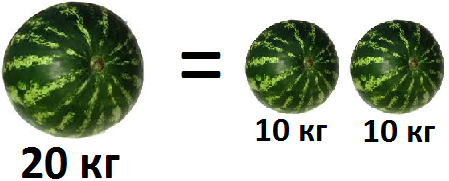
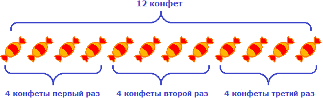
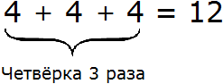
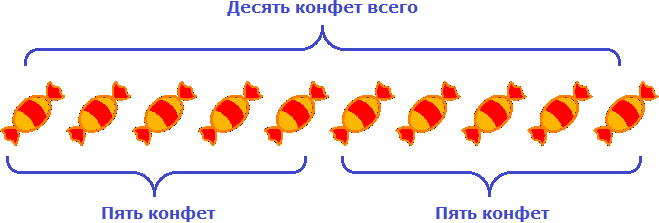

В математике используются разные операции. Основные из них — это сложение, вычитание, умножение и деление. Помимо них также существуют и операции отношения. Они используются для сравнения чисел и выражений.
Основные операции можно разделить на два вида:
- Операции действия:
- сложение (+);
- вычитание (−);
- умножение (×);
- деление (÷).
- Операции отношения:
- равно (=);
- больше (>);
- меньше (<);
- больше или равно (≥);
- меньше или равно (≤);
- не равно (≠).
- Операции отношения
- Операция сложения
- Операция вычитания
- Операция умножения
- Операция деления
- Задания для самостоятельного решения
Операции отношения
Начнём с операций отношения. Само слово «отношение» означает связь между чем-либо.
Простой пример из жизни: папа и мама связаны друг с другом семейными отношениями. Такие отношения называют браком.

Примеров отношений очень много. Можно даже сказать, что весь окружающий нас мир состоит из различных отношений и связей.
Если пятёрка больше тройки, то мы говорим, что «пятерка больше по отношению к тройке» и записываем как 5 > 3 (читается: пять больше, чем три). Острый угол знака отношения должен быть направлен в сторону меньшего числá. В данном примере число 3 меньше, чем число 5, поэтому острый угол знака отношения направлен в сторону числа 3.
Ещё пример. Число 11 меньше, чем число 15. Эту фразу можно записать так:
\[11 < 15\]
В математике с помощью отношений можно записывать законы, формулы, уравнения и функции. Можно записать, что одно выражение равно другому, либо какое-то действие недопустимо по отношению к какому-нибудь объекту, числу, закону.
Например, знаменитая фраза «на ноль делить нельзя» записывается так:

Не будем опережать события и забегать вперёд. Просто скажем, что в этом выражении вместо a и b могут стоять любые числа. Но потом говорится, что b не должно быть равным нулю.
Знак равенства = стáвится между величинами и говорит о том, что эти величины равны между собой.
Например, «пять равно пять» записывается как 5 = 5. Понятно, что две пятерки равны между собой. Помимо привычных для нас чисел, знáком равенства могут соединяться более сложные выражения, например: 9 + x + y = 4 + 5 + x + y.
Ещё пример: если один большой арбуз весит 20 кг, а два маленьких арбуза весят по 10 кг каждый, то между арбузом в 20 кг и двумя арбузами по 10 кг можно поставить знак равенства. Это отношение можно прочитать так: «один арбуз весом в 20 килограмм равен весу двух арбузов, каждый из которых весит 10 кг». Ведь 20 кг = 10 кг + 10 кг.

Знак не равно ≠ ставится между величинами тогда, когда они не равны между собой.
Например, 5 ≠ 7. Ясно, что пятёрка не равна семёрке. Ещё примеры: отличник не равен двоечнику, собака не равна кошке, мандарин это не апельсин:
отличник ≠ двоечник
собака ≠ кошка
мандарин ≠ апельсин
Вы можете осмотреться вокруг себя и найти множество примеров отношений, которые можно истолковать с точки зрения математики.
Операция сложения
Операция сложения обозначается знаком «плюс» (+) и используется, когда складывают числа.
Числа, которые складывают называются слагаемыми. Число, которое получается в результате их сложения, называется суммой.
Например, сложим числа 3 и 2.
Записываем 3 + 2 = 5
В этом примере 3 − это слагаемое, 2 − второе слагаемое, 5 − сумма.
В будущем придётся складывать довольно большие числа. Но сложение этих больших чисел в конечном итоге будет сводиться к тому, чтобы сложить маленькие.
Поэтому нужно научиться складывать маленькие числа в диапазоне от 0 до 9. Например:
\[2 + 2 = 4\]
\[3 + 4 = 7\]
\[7 + 2 = 9\]
\[0 + 7 = 7\]
Можете потренироваться, записав в тетради несколько простых примеров. Поверьте, ничего постыдного в этом нет.
Операция вычитания
Операция вычитания обозначается знаком «минус» (−) и используется когда из одного числа вычитают другое.
Число, из которого вычитают другое число, называется уменьшаемым.
Число, которое вычитают из уменьшаемого числа, называется вычитаемым.
Число, которое получается в результате, называется разностью.
Например, вычтем из числа 10 число 2.
\[10 - 2 = 8\]
В этом примере число 10 − это уменьшаемое, число 2 − вычитаемое, а число 8 − разность.
Операция умножения
Обозначается знаком умножения (×) и используется когда одно число умножается на другое. Слово умножение говорит само за себя — какое-то число увеличивается в определенное количество раз, то есть мнóжится.
Например, запись 4 × 3 означает, что четверка в ходе операции умножения будет увеличена в три раза.
Число, которое увеличивают, называется множимым.
Число, которое показывает во сколько раз нужно увеличить множимое, называется множителем.
Число, которое получается в результате называется произведением.
Например, умножим число 4 на 3.
\[4 \times 3 = 12\]
В этом примере 4 − это множимое, 3 − множитель, 12 − произведение.
Запись 4 × 3 можно понимать как «повторить число 4 три раза».
Например, если у нас имеются четыре конфеты и мы повторим их три раза, то полýчится двенадцать конфет:

Другими словами, умножение 4 на 3 можно представить как сумму трёх четвёрок:

Умножение можно понимать и другим образом, а именно как взятие чего-то определенное количество раз.
Допустим, в вазе лежат конфеты. Возьмём четыре конфеты один раз:
4 конф. × 1 = 4 конф.
У нас в руках окажется четыре конфеты.
Попробуем взять четыре конфеты 2 раза:
4 конф × 2 = 8 конф.
У нас в руках окажется восемь конфет.
Попробуем взять четыре конфеты ноль раз, то есть ни разу:
\[4 \times 0 = 0\]
У нас на руках не окажется конфет, поскольку мы ни разу их не взяли. Поэтому умножение любого числа на ноль даёт в ответе ноль.
В некоторых книгах множимое и множитель называют одним общим словом — сомножители.
Например, в записи 4 × 3 множимым является 4, а множителем 3, но эти два числа ещё можно назвать сомножителями. Ошибкой это не будет.
В будущем мы будем умножать довольно большие числа. Но умножение больших чисел свóдится к тому, чтобы умножить маленькие. Поэтому сначала нужно научиться умножать маленькие числа. Благо, они уже перемножены и записаны в специальную таблицу, которую называют таблицей умножения. Если вы живёте в России или в странах бывшего СССР, то наверняка знаете эту таблицу наизусть. Если не знаете, обязательно выучите!
Операция деления
Обозначается знаком деления (÷ или : ) и используется когда делят числа.
Число, которое делят называют делимым.
Число, которое указывает на сколько частей делят делимое, называется делителем.
Число, которое получается в результате, называется частным.
Например, разделим число 10 на 2.
10 : 2 = 5
В этом примере число 10 − это делимое, число 2 − делитель, число 5 − частное.
Если у нас имеются десять конфет и мы разделим их на две равные части, то в каждой части полýчится по пять конфет:

Так можно понять смысл записи 10 : 2 = 5.
Задания для самостоятельного решения
Большинство людей решат эти задания в уме что конечно похвально. Однако, рекомендуется выполнить эти задания именно в тетради, взяв в руку карандаш. К математике следует привыкать посредством решения простых заданий.
Показать решение
Показать решение
Показать решение
Показать решение
Показать решение
Показать решение
Показать решение
Показать решение
Показать решение
Показать решение
Показать решение
Показать решение
Показать решение
Показать решение
Показать решение
Показать решение
Показать решение
Показать решение
Показать решение
Показать решение
Показать решение
Показать решение
Показать решение
Понравился урок?
Вступай в нашу новую группу Вконтакте и начни получать уведомления о новых уроках